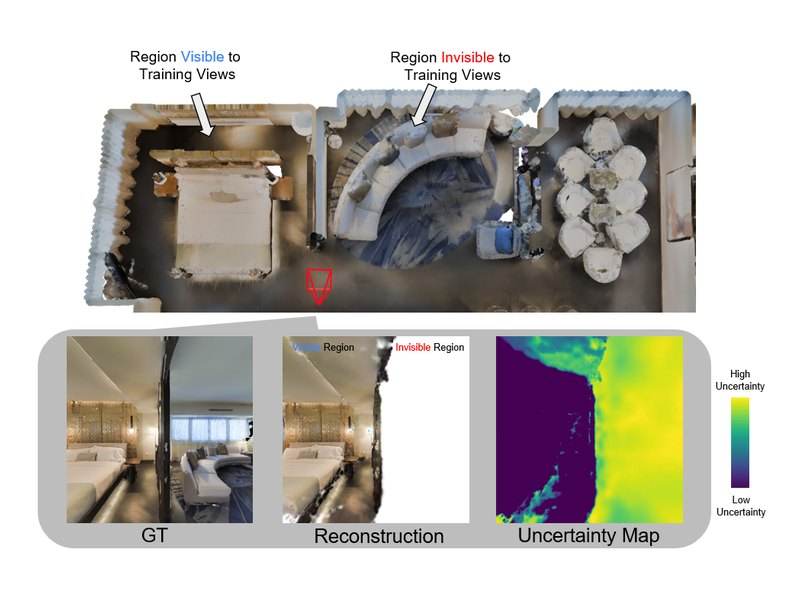
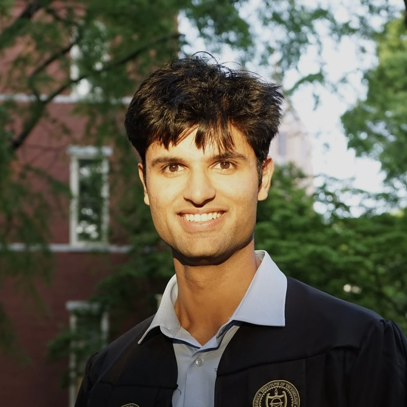
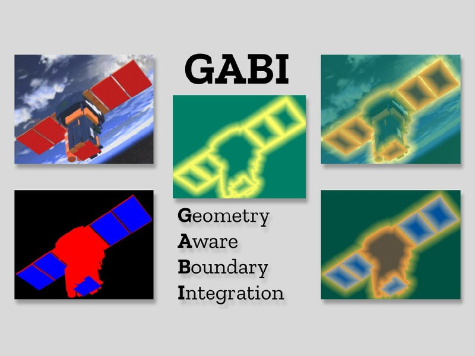
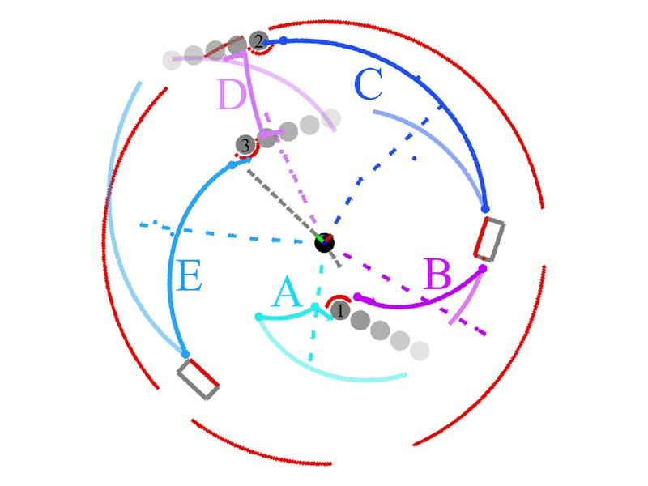
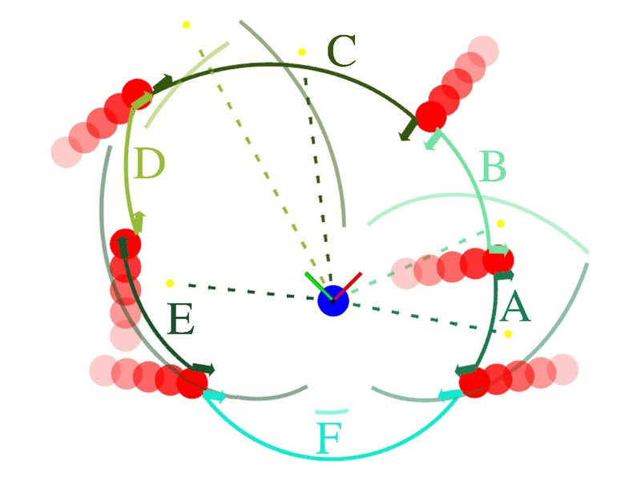

Dhruv Ahuja
I'm an M.S. student in Electrical and Computer Engineering (Robotics) at Georgia Tech, where I also received my B.S. in Electrical Engineering. I'm advised by Prof. Danfei Xu and Prof. Panagiotis Tsiotras.
My research focuses on how robots perceive, model, and navigate unfamiliar environments under uncertainty. I am interested in world models that capture real-world dynamics and enable robust decision-making.
I'm applying to PhD programs for Fall 2027, and I'm also open to research engineering roles.

Research interests
- World models
- Active perception
- Uncertainty quantification
- 3D reconstruction
- Stochastic optimal control
Publications
* denotes equal contribution

GABI: Geometry-Aware Boundary Integration for Spacecraft Segmentation
CVPR Workshops (AI4Space), 2026

Safe Gap-Based Planning in Dynamic Settings
Algorithms for Machine Vision in Navigation and Control, Springer, 2026 (book chapter)
